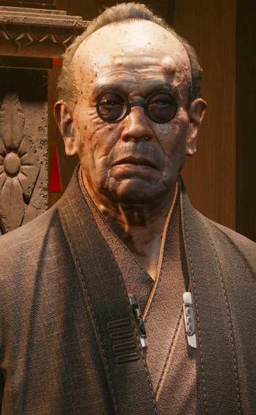
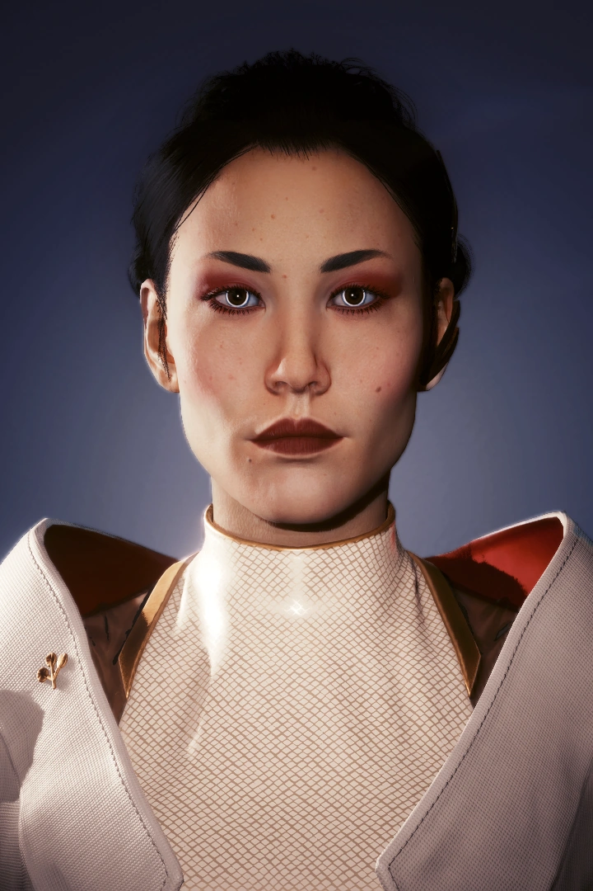
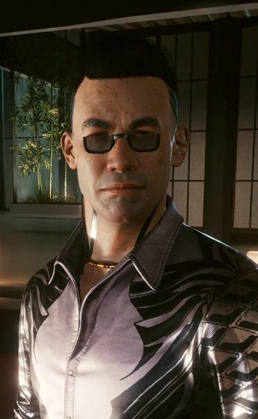

Life, death... And between them... Glass. But we are working on it. Making the border thinner and thinner.
Saburo Arasaka
Founder of Arasaka Corp. "Ded-Dushnila"

My role is to be the heart of the family. It is time for the Arasaka family to listen to their hearts. They will show the way.
Hanako Arasaka
Head of "Kiji" Hatashi Shipping Company / Arasaka "Ultra-Home-Introvertka"

Fear, ever since I can remember. The one thing I can not deny him - he knew how to cause fear in people. He once told me everything of valve is only a flag blowing in wind. And wind is fear. And then ... he blew in my face. That was the one time he was wrong.
Yorinobu Arasaka
Impostor of Arasaka Family "NUH-UH, MOY OTEC TAKOY CRINGE"